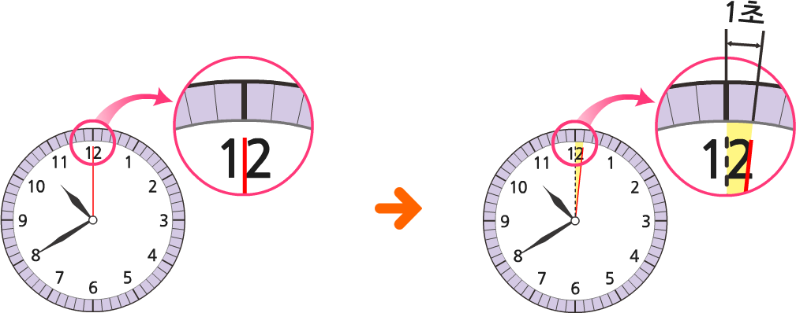
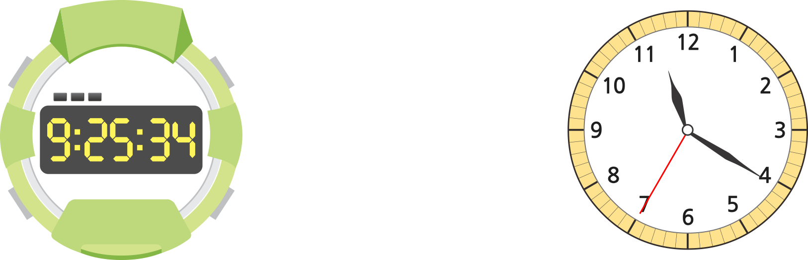

- 개념 정리
- 1
- 2
- 3
- 4
- 5
- 6
-

-
60초: 초바늘이 시계를 한 바퀴 도는데
걸리는 시간
60초 ＝ 1분 -
-
1 1초 동안 할 수 있는 일을 모두 찾아 표 하세요.
-
손뼉 한 번 치기
-
양치질하기
-
눈 깜박이기
-
영화 한 편 보기
-
-
2 시각을 읽어 보세요.
-
시9분25초34
-
시11분20초35
-
-
3 다음 시각에 맞도록 초바늘을 그려 보세요.
-
4 친구들의 양치질 시간을 기록한 것입니다. 안에 알맞은 수를 써넣으세요. 안에 알맞은 수를 써넣으세요.
153초3분 10초분2초33초190 -
5 와 같이 안에 알맞은 시간의 단위를 써넣으세요.
횡단보도를 건널 때 녹색 신호등이 켜져 있는 시간: 20초-
노래 한 곡을 듣는 시간: 4분
-
날린 종이비행기가 공중에 떠 있는 시간: 15초
-
등산하는 데 걸린 시간: 3시간
-
-
6 준수는 철봉에 3분 37초 동안 매달렸고, 윤서는 철봉에 200초 동안 매달렸습니다. 더 오래 철봉에 매달린 친구는 누구인지 찾고, 그 까닭을 설명해 보세요.
-
답준수
-
까닭
-
예준수는 철봉에 3분 37초＝217초 동안 매달렸습니다. 217초＞200초이므로 더 오래 철봉에 매달린 친구는 준수입니다.
-
-